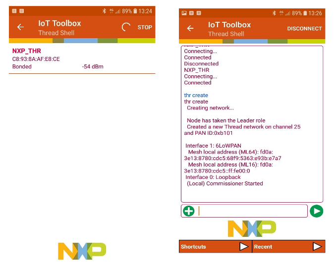

- Build the .srec or .bin file for the ble_thread_router_wireless_uart embedded project
corresponding to the hardware board, using IAR or MCUXpresso IDEs.
- Download the ble_thread_router_wireless_uart image to the board using a Test Tool or a
similar flashing tool.
- Scan using the phone for an active Bluetooth LE connection and select the connection exposed by
the ble_thread_router_wireless_uart embedded application.
- Connect the phone to the board.
- Execute the thread network management commands from the virtual shell HyperTerminal.
Figure 1. Hybrid Thread/Bluetooth LE device shown in the Thread Shell Bluetooth LE scan interface (left)
Executing Thread Network Management Commands (right)
